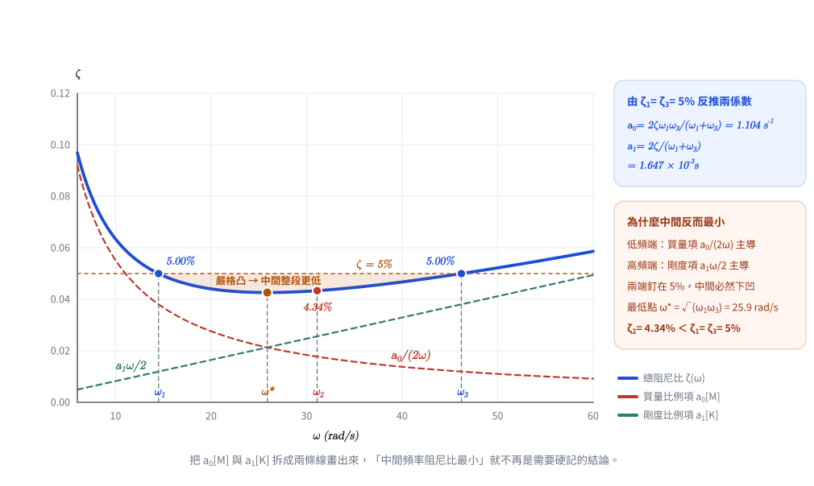
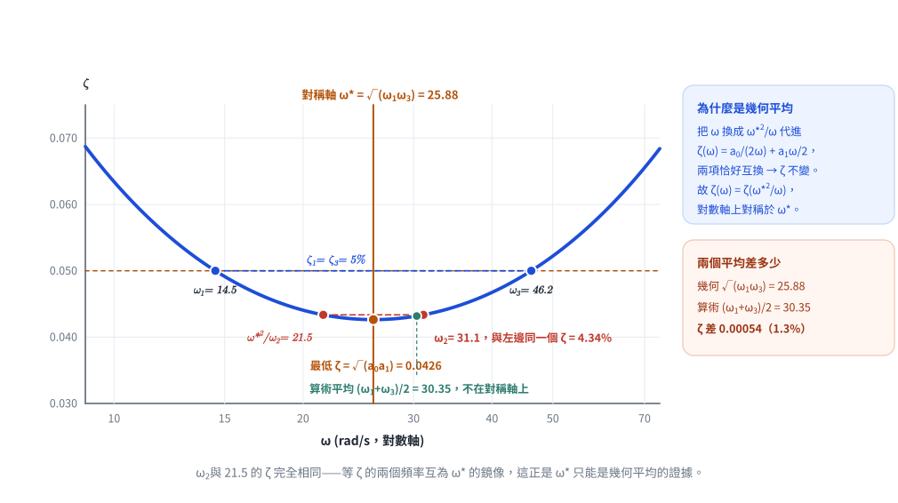

📄 題目正本：考卷原文・附圖・判讀清單（已確認）
SD-2025-3 題目正本
本檔只記錄考卷上寫了什麼、圖上畫了什麼，不含任何解法。解析見同資料夾
SD-2025-3.md。
判讀清單經使用者確認前，狀態為「待確認」；確認後本檔原則上不再修改（改動須回考卷原圖並記 log）。
| 項目 | 內容 |
|---|---|
| 考卷 | raw/exams/SD-2025_結構動力分析與耐震設計.pdf，第 2 頁（背面），第三題 |
| 考年 | 2025（民國114年）專技高考結構工程技師「結構動力分析與耐震設計」 |
| 配分 | 25 分（㈠15 分、㈡10 分） |
| 附圖 | 無（本題無附圖） |
| 判讀狀態 | 已確認（2026-11-15 使用者授權依 Claude 建議確認。原轉錄：2026-11-15 轉錄；PyMuPDF 110 dpi 整頁目視，PDF 文字層核對原文；盲讀於開啟解析前完成） |
1. 考卷原文（逐字）
三、一 3 層樓之平面構架，簡化為 3-DOF 之結構系統分析，若各振態頻率：
$$\{\omega\}=\begin{Bmatrix}\omega_1\\ \omega_2\\ \omega_3\end{Bmatrix}=\begin{Bmatrix}14.5\\ 31.1\\ 46.2\end{Bmatrix}\ \text{rad./sec}$$
假設第一及第三振態阻尼比：$\zeta_1=\zeta_3=0.05$，若採用 Rayleigh Damping：$[c]=a_0[M]+a_1[K]$
求：㈠係數 $a_0=?$ 和 $a_1=?$（15 分）
㈡第二振態之阻尼比 $\zeta_2=?$（10 分）
2. 考卷給的公式、附表與參數
- 考卷給的式子：Rayleigh 阻尼 $[c]=a_0[M]+a_1[K]$。
- 給定：$\omega_1=14.5$、$\omega_2=31.1$、$\omega_3=46.2$ rad/s；$\zeta_1=\zeta_3=0.05$。
- 考卷沒有給：質量矩陣、勁度矩陣、振態向量（本題用不到）。
- 卷首注意事項：㈠可以使用電子計算器。㈡不必抄題，作答時請將試題題號及答案依照順序寫在試卷上，於本試題上作答者，不予計分。㈢本科目除專門名詞或數理公式外，應使用本國文字作答。考試時間：2 小時。
3. 附圖
本題無附圖。
4. 判讀清單
| # | 項目 | 判讀 | 圖上／題文依據 | 把握 |
|---|---|---|---|---|
| 1 | 頻率單位 | 題給 $\omega_i$ 已是角頻率 rad/s，不需再乘 $2\pi$ | 題文「rad./sec」 | 確定 |
| 2 | 錨點 | 以第一、第三振態（14.5、46.2 rad/s）阻尼比 0.05 求 $a_0$、$a_1$ | 題文 | 確定 |
| 3 | 所求 | ㈠ $a_0$（質量比例係數，單位 1/s）、$a_1$（勁度比例係數，單位 s）；㈡ $\zeta_2$ | 題文 | 確定 |
| 4 | 考卷沒有給 | M、K、振態向量 | 題文 | 確定 |
轉錄：2026-11-15（SD-U1-3 題目正本推廣・批 3）
確認：2026-11-15 使用者授權依 Claude 建議確認（SD-U1-3 題目正本推廣・批 3，關卡一）
考題編號：SD-2025-3
主分類： SD-U1-3 單自由度、多自由度系統之動態分析及應用
副分類： SD-U1-1 結構動力基本性質及原理
分析方法： MDOF模態分析
標籤： Rayleigh阻尼 比例阻尼 阻尼比 3自由度 a0a1係數 頻率加權阻尼
1. 題目（考卷原文見題目正本）
考卷原文、公式／附表、附圖與判讀清單（已確認）見
SD-2025-3-problem.md。本節只列解題時最容易讀錯的地方與本解使用的記號；題意以題目正本為準。
常見誤讀
| 項目 | 正確判讀 | 常見誤讀 |
|---|---|---|
| 頻率單位 | 題給 $\omega_i$ 已是 rad/s（判讀 #1） | 再乘 $2\pi$ |
| 錨點 | 第一、第三振態 $\zeta=0.05$，求 $a_0$、$a_1$ 後代 $\omega_2$（判讀 #2） | 用第一、第二振態當錨點 |
| 係數單位 | $a_0$ 為 1/s、$a_1$ 為 s（判讀 #3） | — |
本解記號： $\zeta_n=\dfrac{a_0}{2\omega_n}+\dfrac{a_1\omega_n}{2}$。
2. 考題核心精神與出題者意圖 (Core Concepts & Examiner's Intent)
核心觀念： Rayleigh 比例阻尼的數學結構——以兩組已知模態的阻尼比，反推質量阻尼係數 a₀ 與剛度阻尼係數 a₁，再算出第三個模態的阻尼比。
出題者測驗能力：
- 理解 Rayleigh Damping 中阻尼比 ζᵢ 與 ωᵢ 的關係式
- 能正確建立聯立方程式並求解 a₀、a₁
- 知道 a₀、a₁ 確定後即可計算任意模態阻尼比
- 理解「中間頻率阻尼比可能低於端點」的物理現象
出題意圖： 考驗對 Rayleigh Damping 的熟悉度——特別是 ζ₂ < ζ₁ = ζ₃ 這個違反直覺的結論，是進階理解的關鍵。
3. 解題戰略地圖與陷阱分析 (Strategic Roadmap & Trap Analysis)
作戰計畫：
Step 1: 寫出 Rayleigh Damping 的阻尼比公式 ζᵢ = a₀/(2ωᵢ) + a₁ωᵢ/2
Step 2: 代入 ζ₁、ζ₃ 建立 2×2 聯立方程（a₀、a₁ 為未知數）
Step 3: 解聯立（相減消去 a₀）→ 先得 a₁，再得 a₀
Step 4: 代入 ω₂ 計算 ζ₂
關鍵陷阱：
| 陷阱 | 說明 | 應對 |
|---|---|---|
| ⚠ 公式混淆 | ζᵢ = a₀/(2ωᵢ) + a₁ωᵢ/2，分子分母不能倒置 | 記憶：a₀ 除以頻率（低頻放大），a₁ 乘以頻率（高頻放大） |
| ⚠ 聯立方程整理 | 直接用 ζ = a₀/(2ω) + a₁ω/2，兩式相減前先乘以 2ω | 整理為 a₀ + ωᵢ²·a₁ = 2ωᵢζᵢ 更清晰 |
| ⚠ ζ₂ 的大小關係 | ζ₂ < ζ₁ = ζ₃（中間頻率阻尼比最小），違反直覺但正確 | Rayleigh 曲線是 U 形，端點阻尼比由 a₀、a₁ 定義，中間偏低 |
| ⚠ 單位一致 | ω 單位 rad/s，a₀ 單位 1/s，a₁ 單位 s | 代入數字前確認單位 |
3.5 變數層次分析 (Variable Hierarchy Analysis)
複習提示：第一次解題後，在每個卡住的知識點旁標記
⚠；第二次複習時只看有⚠的項目。
最終目標
由兩個已知模態阻尼比（ζ₁ = ζ₃ = 0.05），利用 Rayleigh Damping 公式求係數 a₀、a₁ 及未知模態阻尼比 ζ₂。
本題關鍵公式（依計算順序）
$$\zeta_i = \frac{a_0}{2\omega_i} + \frac{a_1\omega_i}{2} \quad \text{（Rayleigh Damping 阻尼比公式）}$$
$$a_0 + \omega_i^2 \cdot a_1 = 2\omega_i\zeta_i \quad \text{（整理後的線性方程，以 }a_0, a_1\text{ 為未知數）}$$
$$a_1 = \frac{2(\zeta_3\omega_3 - \zeta_1\omega_1)}{\omega_3^2 - \omega_1^2} = \frac{2\zeta}{\omega_1 + \omega_3} \quad \text{（相減消去 }a_0\text{，特別式：}\zeta_1=\zeta_3=\zeta\text{）}$$
$$a_0 = 2\zeta\omega_1 - \omega_1^2 \cdot \boxed{a_1} = \frac{2\zeta\omega_1\omega_3}{\omega_1+\omega_3} \quad \text{（代回求 }a_0\text{）}$$
$$\zeta_2 = \frac{\boxed{a_0}}{2\omega_2} + \frac{\boxed{a_1}\omega_2}{2} \quad \text{（求第二模態阻尼比）}$$
L1：題目直接給定
| 符號 | 數值 | 說明 |
|---|---|---|
| ω₁ | 14.5 rad/s | 第一模態頻率 |
| ω₂ | 31.1 rad/s | 第二模態頻率 |
| ω₃ | 46.2 rad/s | 第三模態頻率 |
| ζ₁ | 0.05 | 第一模態阻尼比（已知） |
| ζ₃ | 0.05 | 第三模態阻尼比（已知） |
L2：需知識點推導
① Rayleigh 阻尼比聯立方程
| 符號 | 公式／來源 | 卡關? |
|---|---|---|
| 方程 (I) | a₀ + 14.5²·a₁ = 2×14.5×0.05 = 1.45 | |
| 方程 (II) | a₀ + 46.2²·a₁ = 2×46.2×0.05 = 4.62 |
② 求解 a₀、a₁
| 符號 | 公式／來源 | 卡關? |
|---|---|---|
| a₁ | (4.62−1.45)/(46.2²−14.5²) = 3.17/1924.19 | |
| a₀ | 1.45 − 14.5²×a₁ |
③ 求 ζ₂
| 符號 | 公式／來源 | 卡關? |
|---|---|---|
| ζ₂ | a₀/(2×31.1) + a₁×31.1/2 |
L3：深層知識（不懂就卡住）
| 知識點 | 說明 | 卡關? |
|---|---|---|
| Rayleigh Damping 物理意義 | a₀[M]：質量阻尼（低頻模態阻尼大）；a₁[K]：剛度阻尼（高頻模態阻尼大）；兩者疊加形成 U 型阻尼曲線 | |
| ζ₂ 必然 < ζ₁、ζ₃（U 型） | ζ(ω) 嚴格凸，且在 ω₁、ω₃ 同取 0.05 → 兩點之間必嚴格更低（這才是理由，與 ω 的位置無關）。另 ζ(ω) = ζ(ω²/ω)，即在對數頻率軸上關於 ω 對稱，故 ω 是幾何平均 √(ω₁ω₃) 而非算術平均 | |
| 緊湊公式的推導 | 當 ζ₁ = ζ₃ = ζ：a₁ = 2ζ/(ω₁+ω₃)，a₀ = 2ζω₁ω₃/(ω₁+ω₃)，可直接背誦 | |
| ζ₂ 緊湊公式 | ζ₂ = ζ(ω₁ω₃ + ω₂²) / [ω₂(ω₁+ω₃)]（不要背，推導即可） |
4. 步驟化詳細計算過程 (Step-by-Step Detailed Calculation)
Step 1：寫出 Rayleigh Damping 阻尼比公式
對第 i 個模態，阻尼比為：
$$\zeta_i = \frac{a_0}{2\omega_i} + \frac{a_1\omega_i}{2}$$
兩邊乘以 $2\omega_i$，整理為：
$$a_0 + \omega_i^2 \cdot a_1 = 2\omega_i\zeta_i \quad \cdots (*)$$
Step 2：建立聯立方程式
代入模態 1（$\omega_1 = 14.5$，$\zeta_1 = 0.05$）：
$$a_0 + (14.5)^2 \cdot a_1 = 2 \times 14.5 \times 0.05$$
$$a_0 + 210.25\,a_1 = 1.45 \quad \cdots \text{(I)}$$
代入模態 3（$\omega_3 = 46.2$，$\zeta_3 = 0.05$）：
$$a_0 + (46.2)^2 \cdot a_1 = 2 \times 46.2 \times 0.05$$
$$a_0 + 2134.44\,a_1 = 4.62 \quad \cdots \text{(II)}$$
Step 3：求解 a₀、a₁
(II) − (I)：
$$(2134.44 - 210.25)\,a_1 = 4.62 - 1.45$$
$$1924.19\,a_1 = 3.17$$
$$\boxed{a_1 = \frac{3.17}{1924.19} = \frac{2\zeta}{\omega_1+\omega_3} = \frac{0.1}{60.7} = 1.6474 \times 10^{-3} \approx 1.647 \times 10^{-3} \text{ s}}$$
代回 (I)：
$$a_0 = 1.45 - 210.25 \times 1.6474 \times 10^{-3} = 1.45 - 0.34637 = 1.10363$$
$$\boxed{a_0 = \frac{2\zeta\omega_1\omega_3}{\omega_1+\omega_3} = \frac{0.1 \times 14.5 \times 46.2}{60.7} = \frac{66.99}{60.7} \approx 1.104 \text{ s}^{-1}}$$
驗算：
$$\zeta_1 = \frac{1.1036}{2\times14.5} + \frac{1.6474\times10^{-3}\times14.5}{2} = 0.03806 + 0.01194 = 0.0500 \; \checkmark$$
$$\zeta_3 = \frac{1.1036}{2\times46.2} + \frac{1.6474\times10^{-3}\times46.2}{2} = 0.01194 + 0.03806 = 0.0500 \; \checkmark$$
Step 4：計算第二振態阻尼比 ζ₂
代入 $\omega_2 = 31.1$ rad/s：
$$\zeta_2 = \frac{a_0}{2\omega_2} + \frac{a_1\omega_2}{2} = \frac{1.1036}{2\times31.1} + \frac{1.6474\times10^{-3}\times31.1}{2}$$
$$= \frac{1.104}{62.2} + \frac{0.05125}{2} = 0.01775 + 0.02563$$
$$\boxed{\zeta_2 \approx 0.0434 \quad (4.34\%)}$$
彙整答案
| 問題 | 答案 |
|---|---|
| (一) a₀ | 1.104 s⁻¹（或 1.104 1/s） |
| (一) a₁ | 1.647 × 10⁻³ s |
| (二) ζ₂ | 0.0434（4.34%） |
觀察： $\zeta_2 = 4.34\% < \zeta_1 = \zeta_3 = 5\%$，即第二模態阻尼比低於兩端模態——此為 Rayleigh Damping U 型曲線的特徵，中間頻率阻尼最小。
5. 關鍵爭議點與進階探討 (Critical Issues & Advanced Discussion)
5.1 Rayleigh Damping 的 U 型阻尼曲線
$\zeta(\omega) = \frac{a_0}{2\omega} + \frac{a_1\omega}{2}$
對 ω 求導：$\frac{d\zeta}{d\omega} = -\frac{a_0}{2\omega^2} + \frac{a_1}{2} = 0 \implies \omega^* = \sqrt{a_0/a_1}$
代入本題係數：
$$\omega^* = \sqrt{\frac{a_0}{a_1}} = \sqrt{\frac{1.1036}{1.6474\times10^{-3}}} = \sqrt{669.9} = 25.88\ \text{rad/s}$$
而由緊湊式可知這個值有解析意義——它恰是兩控制頻率的幾何平均：
$$\omega^* = \sqrt{\frac{a_0}{a_1}} = \sqrt{\frac{2\zeta\omega_1\omega_3/(\omega_1+\omega_3)}{2\zeta/(\omega_1+\omega_3)}} = \sqrt{\omega_1\omega_3} = \sqrt{14.5\times46.2} = 25.88\ \text{rad/s} \;\checkmark$$
⚠ 「$\omega_2 > \omega^*$」本身推不出 $\zeta_2 < 0.05$。 $\omega^*$ 只是最小值的位置，
落在它的哪一側並不決定與 $0.05$ 的大小關係。正確的論證是凸性：
$\zeta(\omega) = \frac{a_0}{2\omega} + \frac{a_1\omega}{2}$ 中，$a_0/(2\omega)$ 在 $\omega>0$ 為嚴格凸、
$a_1\omega/2$ 為線性，故 $\zeta(\omega)$ 嚴格凸；它在 $\omega_1$ 與 $\omega_3$ 兩點同取 $0.05$，
而嚴格凸函數在兩個等值點之間必定嚴格低於該值。
因此只要 $\omega_1 < \omega_2 < \omega_3$，就必然 $\zeta_2 < 0.05$——與 $\omega_2$ 落在 $\omega^*$ 哪一側無關。

圖 1 U 型曲線與兩條分量線。質量項 $a_0/(2\omega)$ 隨 $\omega$ 遞減、剛度項 $a_1\omega/2$ 隨 $\omega$ 遞增；塗色區是曲線與弦線之間——$\zeta(\omega)$ 嚴格凸、又在 $\omega_1$ 與 $\omega_3$ 同取 5%，故兩點之間整段必定更低。這才是 $\zeta_2 < \zeta_1 = \zeta_3$ 的理由，與 $\omega_2$ 落在 $\omega^*$ 哪一側無關。

圖 2 同一條曲線改畫在對數頻率軸上。$\zeta(\omega) = \zeta(\omega^{*2}/\omega)$，所以等 $\zeta$ 的兩個頻率必定互為 $\omega^*$ 的鏡像——這張圖攔的是「$\omega^*$ 等於 $(\omega_1+\omega_3)/2$」：算術平均 30.35 明顯偏在對稱軸右側，$\omega^*$ 只能是幾何平均 $\sqrt{\omega_1\omega_3}$。
5.2 緊湊推導（當 ζ₁ = ζ₃ = ζ 時）
由 $(*)$ 相減，利用 $ζ_1 = ζ_3 = ζ$：
$$(\omega_3^2 - \omega_1^2)a_1 = 2\zeta(\omega_3 - \omega_1)$$
$$(\omega_3+\omega_1)(\omega_3-\omega_1)a_1 = 2\zeta(\omega_3-\omega_1)$$
$$\boxed{a_1 = \frac{2\zeta}{\omega_1+\omega_3}, \quad a_0 = \frac{2\zeta\omega_1\omega_3}{\omega_1+\omega_3}}$$
此緊湊公式可直接記憶，考場秒算。
5.3 實務應用上的限制
Rayleigh Damping 對兩個以外的模態阻尼比無法精確控制——某些高階模態可能阻尼比偏高（如 ω >> ω₃ 時 a₁ω/2 項主導，阻尼比可能超過合理範圍）。實務上常改用 Caughey Damping（多模態比例阻尼）解決此問題，但考試以 Rayleigh 為主。
5.4 考場答題策略
- 15 分的 a₀、a₁ 是核心，務必先把公式寫清楚再代數字
- 10 分的 ζ₂ 只是代入，不要在這步驟出錯
- 最後寫出「ζ₂ < ζ₁ = ζ₃」並解釋 U 型曲線，可加分（進階觀念展現）
| 欄位 | 值 |
|---|---|
| verificationStatus | unverified |
| hasSolution | true |
驗證狀態備註： 2026-08-22 稽核（第二次）。$a_0$、$\zeta_2 = 0.0434$、$\omega^* = 25.88$ rad/s 等
主要答案獨立復算均正確。本次修正兩點：
① $a_1 = 0.1/60.7 = 1.6474\times10^{-3}$，原文四捨五入為 $1.648\times10^{-3}$（末位偏 1），
已更正為 $1.647\times10^{-3}$ 並同步 §4 Step 3、驗算式、§4 Step 4 與答案表；
此差異不影響 $\zeta_2$ 的三位有效數字（$0.04336$ vs $0.04337$）。
② §5.1 原以「$\omega_2 = 31.1 > \omega^* = 25.9$」佐證 $\zeta_2 < 0.05$，此為非因果推論
（落在 $\omega^*$ 哪一側與大小關係無關）；已改為凸函數論證，並補上 $\omega^* = \sqrt{\omega_1\omega_3}$
的解析推導與「對數頻率軸對稱」的正確限定。
驗證狀態維持unverified，待人工重新驗算。
圖解補繪：2026-08-22（向量圖 2 張，腳本 gen_SD-2025-3.py，所有數值由解題結果算出，可重跑）
修正日期：2026-11-15（§1 改為指向題目正本）